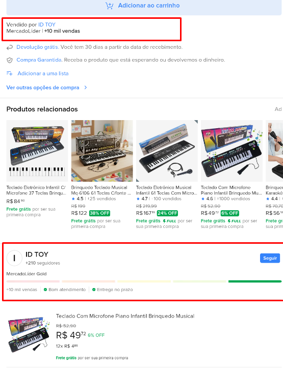

Como usar este Guia Digital
- 🔲 1. Escolha um aplicativo no menu Olhe para o lado esquerdo do ecrã (ou para cima, se estiver no telemóvel). Clique ou toque no botão do aplicativo que deseja aprender a usar.
- 📜 2. Leia o passo a passo O texto no centro do ecrã vai mudar automaticamente. Cada lição está numerada e escrita com letras bem grandes para facilitar a leitura.
- 🖼️ 3. Olhe as imagens demonstrativas Abaixo de alguns passos, verá fotos ilustrativas. Elas servem para comparar com o ecrã do seu próprio telemóvel e ter a certeza de que está no caminho certo.
- 🔝 4. Voltar para o início Sempre que escolher um aplicativo novo, a página vai voltar para o topo sozinha. Assim nunca se perde na leitura!
Como usar o WhatsApp
-
📱 1. Enviar mensagens rapidamente
Toque na conversa da pessoa.
Digite sua mensagem na caixa de texto.
Pressione o botão de enviar (➤).
-
🎤 2. Mandar áudio
Pressione e segure o ícone do microfone.
Fale sua mensagem.
Solte para enviar.
Para gravar sem segurar, deslize o dedo para cima.
-
📷 3. Enviar fotos e vídeos
Toque no ícone de clipe (📎) ou câmera.
Escolha "Galeria" para fotos já salvas ou "Câmera" para tirar uma nova.
Toque em enviar. -
📞 4. Fazer ligações gratuitas
Abra a conversa da pessoa.
Toque no ícone de telefone para chamada de voz.
Toque no ícone de câmera para videochamada. -
⭐ 5. Favoritar mensagens importantes
Pressione a mensagem por alguns segundos.
Toque na estrela.
Depois você poderá encontrá-la facilmente nas mensagens favoritas. -
😊 6. Usar figurinhas e emojis
Toque no ícone 😊 ao lado da caixa de mensagem.
Escolha emojis, GIFs ou figurinhas. -
📍 7. Compartilhar localização
Toque no clipe (📎).
Escolha "Localização".
Envie sua localização atual ou em tempo real.
Como usar o Mercado Livre
-
🔍 1. Pesquise com calma
Digite o nome do produto na barra de busca.
Compare preços de diferentes vendedores.
Leia a descrição completa do produto.
-
⭐ 2. Verifique a reputação do vendedor
Prefira vendedores com boa reputação e muitas vendas.
Leia os comentários de outros compradores.
Veja a nota e o histórico do vendedor.
-
📸 3. Observe as fotos
Confira se as imagens mostram o produto real.
Amplie as fotos para verificar detalhes. -
💰 4. Compare o valor do frete
Às vezes um produto mais barato pode ter um frete mais caro.
Verifique o prazo de entrega antes de finalizar a compra. -
🔒 5. Pague pelo Mercado Pago
Evite negociações fora da plataforma.
O pagamento dentro do sistema oferece mais proteção ao comprador. -
📦 6. Acompanhe a entrega
Após a compra, acompanhe o rastreamento pelo aplicativo.
Você receberá atualizações sobre o envio. -
📝 7. Leia as avaliações
Veja fotos enviadas por outros compradores.
Procure comentários sobre qualidade, tamanho e funcionamento. -
❤️ 8. Salve produtos favoritos
Clique no coração ❤️ para guardar produtos que deseja comprar depois.
Isso ajuda a comparar preços futuramente. -
🚨 9. Desconfie de ofertas muito baratas
Se o preço estiver muito abaixo do normal, investigue melhor.
Verifique a reputação do vendedor e as avaliações.
Como usar o iFood
-
📱 1. Faça seu cadastro
Cadastre seu número de telefone ou e-mail.
Informe seu endereço corretamente. -
🔍 2. Pesquise o que deseja
Digite o nome do restaurante ou do produto.
Use os filtros para encontrar promoções, entrega grátis ou restaurantes próximos.


-
⭐ 3. Veja as avaliações
Confira a nota do estabelecimento.
Leia comentários de outros clientes para conhecer a qualidade do serviço. -
🍕 4. Confira o pedido antes de finalizar
Verifique os itens escolhidos.
Confira quantidade, sabores e observações especiais. -
💳 5. Escolha a forma de pagamento
Cartão de crédito ou débito.
Pix.
Dinheiro (quando disponível). -
🚴 6. Acompanhe a entrega
Após confirmar o pedido, acompanhe o status em tempo real.
Veja quando o restaurante prepara o pedido e quando o entregador está a caminho.
-
📞 7. Use o suporte quando necessário
Se houver algum problema com o pedido, utilize a central de ajuda do aplicativo.
Guarde fotos caso o pedido chegue incorreto. -
❤️ 8. Salve seus restaurantes favoritos
Marque os estabelecimentos que você mais gosta.
Isso facilita pedidos futuros.
Como usar o Gov.br
-
🔐 1. Faça login com seu CPF
Abra o aplicativo.
Informe seu CPF e senha cadastrada.
Caso não tenha conta, siga as instruções para criar uma.
-
👤 2. Confira seus dados
Verifique se seu nome, telefone e e-mail estão corretos.
Mantenha as informações sempre atualizadas. -
🔎 3. Use a busca para encontrar serviços
Digite o nome do serviço desejado.
Exemplos: carteira de trabalho digital, consulta de benefícios e outros serviços públicos. -
📄 4. Acesse documentos digitais
Alguns documentos podem ser consultados diretamente pelo aplicativo.
Acesse dados importantes sem a necessidade de carregar documentos físicos.
-
🛡️ 5. Ative recursos de segurança
Utilize biometria (digital ou reconhecimento facial) se disponível.
Ative a verificação em duas etapas para proteger sua conta. - 🔔 6. Fique atento às notificações O aplicativo pode informar atualizações importantes sobre serviços e solicitações.
Como usar o YouTube
-
📱 1. Pesquise vídeos
Toque na lupa 🔍.
Digite o assunto que deseja assistir.
Escolha um vídeo da lista de resultados.
-
▶️ 2. Assistir a um vídeo
Toque no vídeo desejado.
Para pausar, toque na tela e pressione ⏸️.
Para continuar, pressione ▶️. - 🔊 3. Ajuste o volume Use os botões laterais do celular ou o controle de volume do computador.
-
❤️ 4. Salve vídeos que gostou
Toque em "Salvar" para adicionar o vídeo a uma playlist.
Assim você poderá assistir novamente mais tarde. - 👍 5. Curtir vídeos Toque no botão 👍 para mostrar que gostou do conteúdo.
-
🔔 6. Inscreva-se em canais
Toque em "Inscrever-se".
Ative o sino 🔔 para receber avisos quando houver novos vídeos. -
📺 7. Assistir em tela cheia
Toque no ícone de tela cheia ⛶.
O vídeo ocupará toda a tela do celular.
-
⚙️ 8. Altere a qualidade do vídeo
Toque na engrenagem ⚙️.
Escolha uma qualidade mais alta para melhor imagem ou mais baixa para economizar internet. -
🎵 9. Use legendas
Toque em "CC" ou nas configurações.
Ative as legendas quando disponíveis.
Como usar o Caixa Tem
-
🔐 1. Faça login com CPF e senha
Abra o aplicativo.
Informe seu CPF e senha cadastrada.
Caso seja o primeiro acesso, siga as orientações para criar sua conta. -
👀 2. Consulte seu saldo
Na tela inicial, verifique o valor disponível na conta.
Confira também o histórico de movimentações. -
💸 3. Faça Pix
Escolha a opção "Pix".
Digite a chave Pix ou leia o QR Code.
Confira os dados antes de confirmar. -
🧾 4. Pague contas e boletos
Toque em "Pagar suas contas".
Escaneie o código de barras ou digite os números do boleto. -
📲 5. Faça transferências
É possível transferir dinheiro para outras contas.
Verifique os dados do destinatário antes de concluir. - 🛒 6. Use o cartão de débito virtual O aplicativo disponibiliza um cartão virtual para compras online, quando disponível para sua conta.
- 🔔 7. Acompanhe seus benefícios Consulte informações sobre benefícios e pagamentos diretamente no aplicativo.
👴👵 9. Dicas para idosos e iniciantes
Tenha CPF e celular em mãos ao acessar o aplicativo. Leia as informações com atenção antes de confirmar operações. Em caso de dúvida, procure atendimento oficial da Caixa.
⚠️ 10. Cuidados importantes
Proteja sua conta: Nunca compartilhe sua senha. Não informe códigos recebidos por SMS para outras pessoas. Desconecte-se do aplicativo ao usar aparelhos compartilhados.
Desconfie de mensagens prometendo liberação de dinheiro mediante pagamento. A Caixa não solicita senhas por telefone, WhatsApp ou redes sociais. Sempre utilize os canais oficiais.
✔️ Antes de realizar uma operação confira:
✅ CPF correto
✅ Saldo disponível
✅ Dados do destinatário conferidos
✅ Valor revisado
✅ Senha protegida